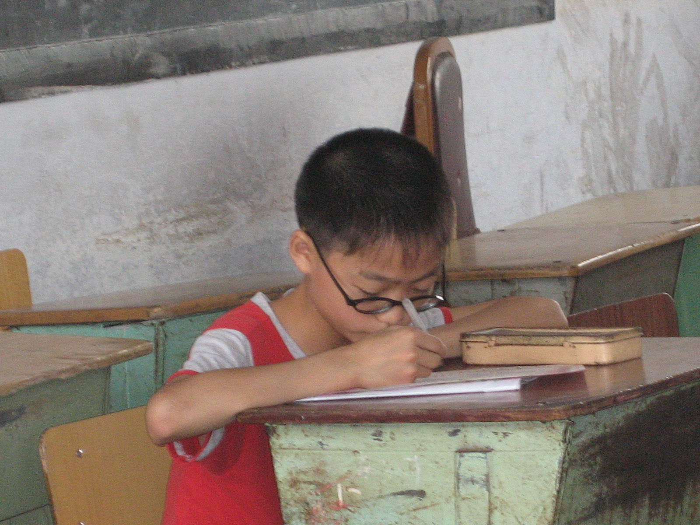
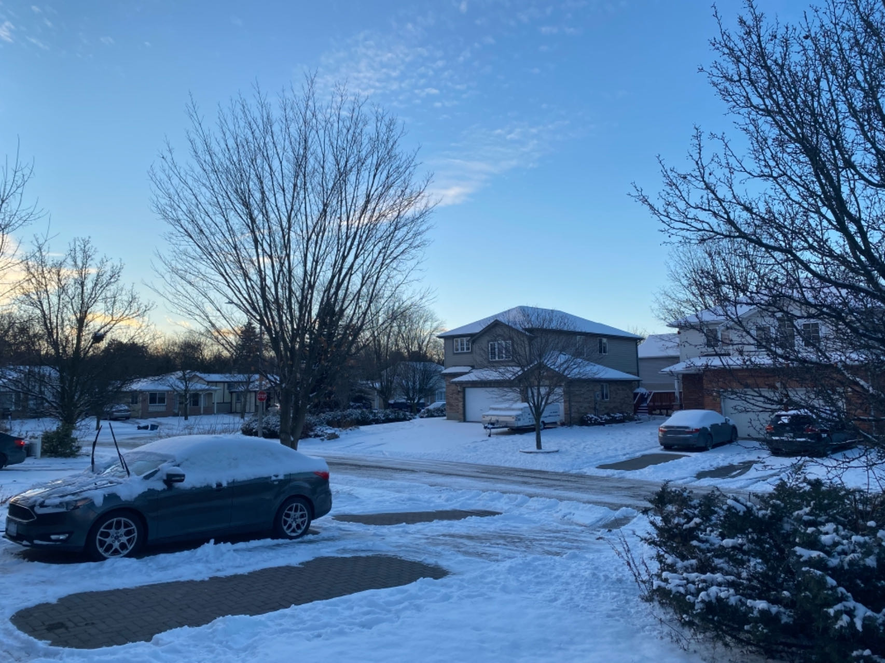

I am currently a 3rd-year Ph.D. candidate in Department of Statistics and Acturial Science at University of Waterloo, supervised by Dr. Changbao Wu. My current research is concerned with causal inference and domain adaption. I was born and grew up in Zigong (自贡), a small county in Sichuan, China.